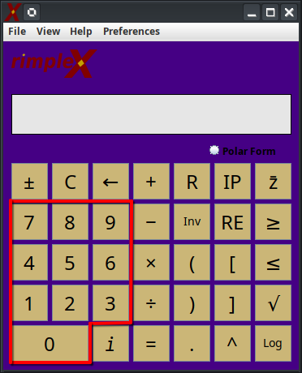
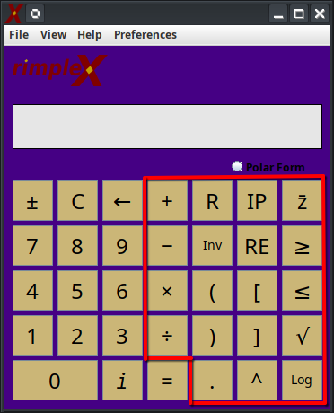
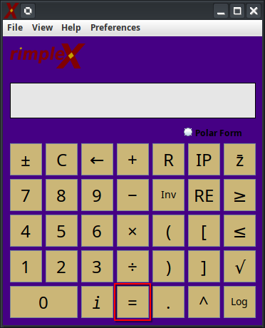
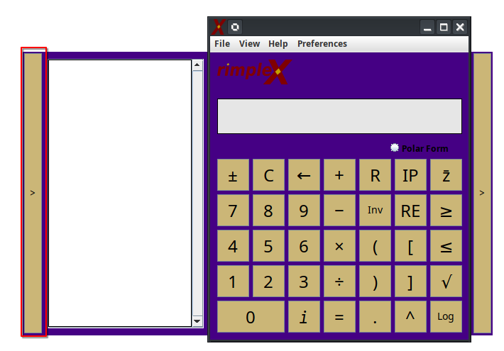
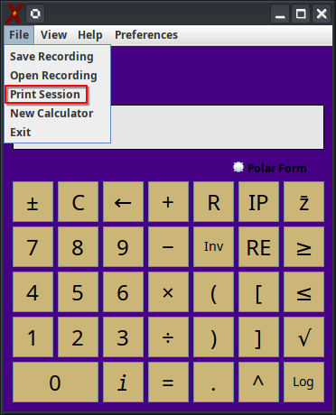
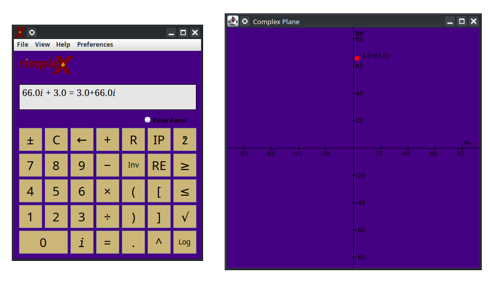
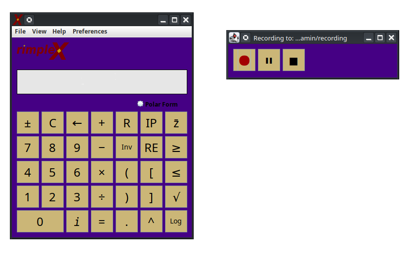
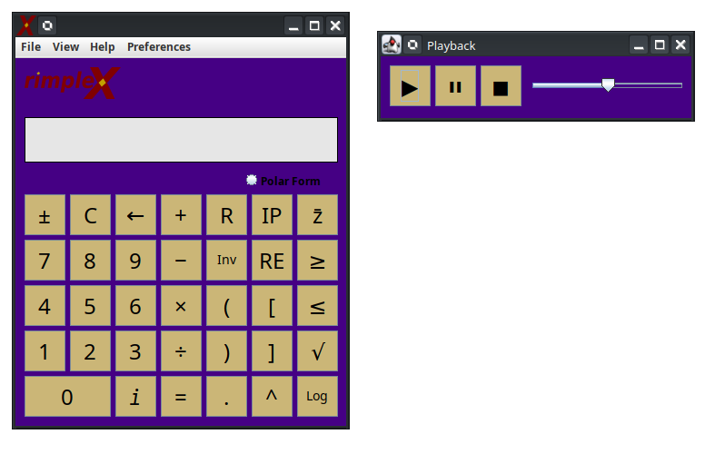

RimpleX Help Documentation
Entering numbers into the calculator:
Numbers can be entered by either clicking the number on the screen or pressing the corresponding number on the keyboard.

Entering operations into the calculator:
Operations can be entered by either clicking the icon on the screen or pressing certain keys on the keyboard.

Legend:
- Change Sign - ± - Changes the sign of the current operand.
- Clear - C - Clears the current operand.
- Backspace - ← - Deletes the most recent character in the operand.
- Add - + - Starts addition operation.
- Subtract - − - Starts subtraction operation.
- Multiply - × - Starts Multiplication operation.
- Divide - ÷ - Starts Division operation.
- Reset - R - Clears both the current operand and the previous calculation/equation.
- Inverse - Inv - Inverts the current operand.
- Parentheses - (/) - Inserts parentheses into the operand.
- Decimal - . - Inserts a decimal point into the operand.
- Imaginary Part - IM - Shows the imaginary part of an equation.
- Real Part - RE - Shows the real part of an equation.
- Polar Form - Polar - Shows the polar form of an equation.
- Conjugate - z̄ - Shows the conjugate of an equation.
- Exponent - ^ - Inserts an exponent into the operand.
- Square root - √ - Inserts a square root operation into the operand.
- Logarithm - Log - Inserts a logarithm operation into the operand.
- Greater than or equal to - ≥ - Compares the current operand
- Less than or equal to - ≤ - Compares the current operand
Running a calculation:
Press the Equals "=" key on the keyboard or screen to compute the current equation on the left side of the display.

Revealing the session history:
Pressing the bar on the left side will enable the session history to be revealed or closed.

Printing the session history:
Press "File" on the toolbar, and then press "Print Session"

Revealing the intermediate steps
Pressing the bar on the right side will enable the intermediate steps to be revealed or closed.

Visualzing complex numbers on the complex plane:
Click the "View" dropdown and click "Complex Plane" with an acceptable result in the display, and the complex plane will open in a new window.

Saving a recording:
Click the "File" dropdown and click "Save Recording" to open the recording window.

Playing back a recording:
Click the "File" dropdown and click "Open Recording" to open the playback window.
